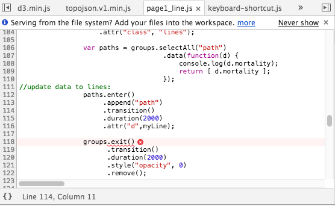

If you have a bug in your code, you need to do some things first, and then ask for help if you fail. Your help request has to have details in it, or we will waste time!
Using breakpoints -- to stop your code at a certain line and inspect the values of various variables and data.
Use Command-option-i on the Mac to quickly open the console window. Click on the "SOURCE" tab. Navigate to the js file you are trying to debug.
Using breakpoints:
Also, when you stop right before a certain point, you can then execute code "by hand" in the console window to see what the values are yourself. I do this for selections (to see if there is anything actually selected) and scales - to check xScale.domain() for instance, to verify the numbers are right.
Turn off excessive logging if you don't need it anymore! You want your console.logs to be useful. A linter will complain if there are ANY left when you finish your code.
Click to expand the error message to see the lines of code, and find the first item FROM THE TOP that refers to your code (not d3 or another library you are including):
Then if you click on that line, your source window will take you there. Notice in this case there is something else marked with a red X. This is also an error source.

D3 tooltips Need to be attached to the document "body" to work properly! Otherwise their positioning will be wrong. Double check where you put them if you have location issues.
Also, use a class other than "tooltip" if you use Bootstrap. It may conflict.
Frequently, you get NaN's in the console with SVG shapes when there is something wrong with a scale.
Go back to how you set up your scales and check the .domain()s to see if they are valid.
Remember there are some general patterns for the code for updated graphs.
var circles = svg.selectAll("circle.countries").data(mydata, function(d){return d.Country;});
b. enter to draw new ones
c. exit to remove ones you don't need now
d. transition - this applies to all the items "left" on the page after the enter and exit, and makes them move prettily.You can see this full pattern in use in ../Week8/scatter_data_update.html.
If you have a single data element, you can use .datum(). There is no enter function with a single data element! You just append things after it.
If you want to create SVG elements from multiple data items, you need to use .data() and an enter() function.
Read the answer from Mike here: http://stackoverflow.com/questions/10086167/d3-how-to-deal-with-json-data-structures
TODO: Bring this forward into data binding, maybe the line section.
Project work!